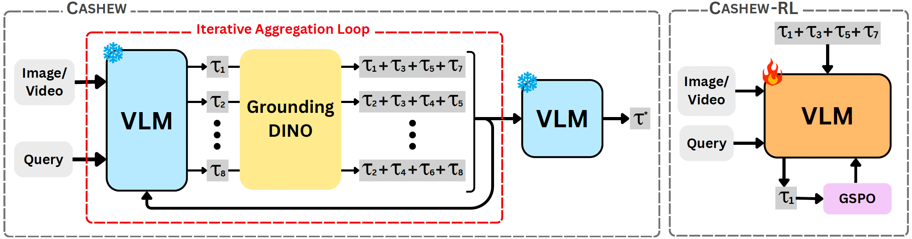
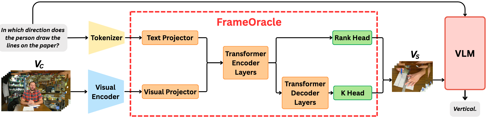
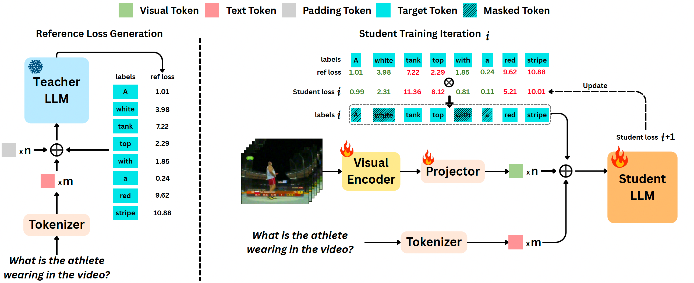

Publications
2026
- 
-
CASHEW: Stabilizing Multimodal Reasoning via Iterative Trajectory Aggregation
Chaoyu Li, Deeparghya Dutta Barua, Fei Tao, Pooyan Fazli
arXiv
2025
- 
-
FrameOracle: Learning What to See and How Much to See in Videos
Chaoyu Li, Tianzhi Li, Fei Tao, Zhenyu Zhao, Ziqian Wu, Maozheng Zhao,
Juntong Song, Cheng Niu, Pooyan Fazli
arXiv
- 
-
ReGATE: Learning Faster and Better with Fewer Tokens in MLLMs
Chaoyu Li, Yogesh Kulkarni, Pooyan Fazli
arXiv
2021
-

-
Infrared Action Detection in the Dark via Cross-Stream Attention Mechanism
Xu Chen*, Chenqiang Gao*, Chaoyu Li, Yi Yang, Deyu Meng
IEEE Transactions on Multimedia(TMM) , 2021
PDF
2019
-

-
NTT CQUPT@TRECVID2019 ActEV: Activities in Extended Video
Yongqing Sun, Xu Chen, Chaoyu Li et al.
TREC Video Retrieval Evaluation (TRECVID), 2019
PDF
-

-
Face Anti-Spoofing Based on Multi-layer Domain Adaptation
Fengshun Zhou*, Chenqiang Gao*, Fang Chen, Chaoyu Li, Xindou Li, Feng Yang, Yue Zhao
IEEE International Conference on Multimedia & Expo Workshops (ICMEW) , 2019
PDF